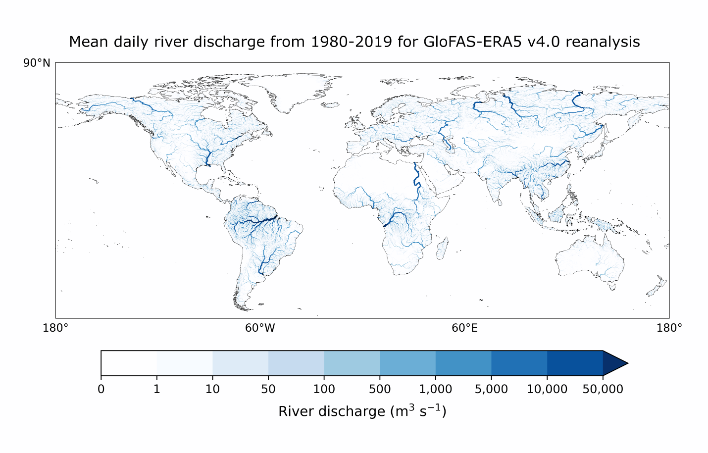

Observing major flood events with GLOFAS#
About#
This tutorial will demonstrate how to investigate a specific flood event using data from the GLObal Flood Awareness Service (GLOFAS). For this example we look at the major flood event in Bangladesh in June 2022 and assess the excess river discharge in comparison to the long-term (10-year) discharge statistics.
GloFAS is a product and service of the Copernicus Emergency Management Service. The Joint Research Centre of the European Commission is the entrusted entity responsible for CEMS GloFAS in terms of management, technical implementation and evolution. ECMWF is the designated contractor to implement the operational functionalities of the CEMS-COMP (Hydrological Forecast Computational Centre).
The tutorial is structured as follows:
(Install and import the required python packages)
Download the data of interest from the Early warning Data Store (EWDS);;
Explore the data with xarray, apply mask using the auxilary data, and produce demonstrative map plots;
Compute and plot time-series of the June 2022 river discharge against the 10-year period;
Compute and display a map of the number of days in June 2022 that the river discharge exceeded the 90th percentile of the 10-year period.
The steps and methods here serve as demonstrative examples and could be applied to other events and datasets, e.g. fire and heatwave events.

| Run the tutorial via free cloud platforms: |
|
 |
|
|---|
Setup your environment#
Before we begin we must prepare our environment. This includes installing the Application Programming Interface (API) of the EWDS, and importing the various python libraries that we will need.
Install EWDS API#
To install the EWDS API, run the following command. We use an exclamation mark to pass the command to the shell (not to the Python interpreter).
!pip -q install cdsapi #'cdsapi>=0.7.2'
# Other requirements:
!pip -q install cfgrib ecmwflibs
!pip -q install xarray netcdf4
!pip -q install matplotlib
!pip -q install cartopy
Import libraries#
We will be working with data in Grib and Grib format. To best handle this data we will use libraries for working with multidimensional arrays, in particular Xarray. We will also need libraries for plotting and viewing data, in this case we will use Matplotlib and Cartopy.
import os
# CDS API
import cdsapi
# Libraries for working with multidimensional arrays
import numpy as np
import xarray as xr
# Libraries for plotting and visualising data
import matplotlib.pyplot as plt
import cartopy.crs as ccrs
import cartopy.feature as cfeature
# Disable warnings for data download via API
import urllib3
urllib3.disable_warnings()
# Disable xarray runtime warnings
import warnings
warnings.simplefilter("ignore", category=RuntimeWarning)
Running cells with 'Python 3.12.3' requires the ipykernel package.
Run the following command to install 'ipykernel' into the Python environment.
Command: '/bin/python3.12 -m pip install ipykernel -U --user --force-reinstall'
Search and download the data#
Enter your EWDS API key#
We will request data from the Early Warning Data Store (EWDS) programmatically with the help of the EWDS API.
If you have not set up your EWDS API credentials with a ~/.cdsapirc file, it is possible to provide the credentials when initialising the cdsapi.Client. To do this we must define the two variables needed to establish a connection: URL and KEY . The URL for the EWDS api is common and you do not need to modify that field. The KEY is string of characters made up of your your personal User ID and EWDS API key. To obtain these, first register or login to the EWDS (https://ewds.climate.copernicus.eu/), then visit https://ewds.climate.copernicus.eu/how-to-api and copy the string of characters listed after “key:”. Replace the ######### below with this string.
NOTE: If you have set up your cdsapi key using a ~/.cdsapirc you do not need to add your key below.
if os.path.isfile("~/.cdsapirc"):
cdsapi_kwargs = {}
else:
URL = 'https://ewds.climate.copernicus.eu/api'
KEY = '##################################'
cdsapi_kwargs = {
'url': URL,
'key': KEY,
}
Here we specify a data directory in which we will download our data and all output files that we will generate:
DATADIR = './data_dir'
os.makedirs(DATADIR, exist_ok=True)
Find the river discharge data we want#
The historical GLOFAS data can be found in EWDS catalogue entry.
We are going to look at the Bangladesh flood in June 2022. For our analysis we are going to compare June 2022 against all the June data from the 10-year reference period: 2012 to 2021. This period has been chosen for demonstrative purposes, a thorough analysis would choose a much longer reference period.
For our study we are going to make the following selection on the download page:
System version: version 4.0
Hydrological model: LISFLOOD
Product type: Consolidated
Variable: River discharge in the last 24 hours’
Year: 2012 to 2022
Month: 06
Day: All days
Area: [30, 85, 20, 95] = A bounding box for Bangladesh
data_format: Grib
download_format: unarchived
At the end of the download form, select “Show API request”. This will reveal a block of code, which you can simply copy and paste into a cell of your Jupyter Notebook (see cells below).
Download data#
… having copied the API request into the cell below, running this will retrieve and download the data you requested into your local directory. However, before you run the cell below, the terms and conditions of this particular dataset need to have been accepted in the EWDS. The option to view and accept these conditions is given at the end of the download form, just above the “Show API request” option.
download_file = f"{DATADIR}/glofas-2012_2022.grib"
if not os.path.isfile(download_file):
c = cdsapi.Client()
DATASET="cems-glofas-historical"
REQUEST= {
"system_version": ["version_4_0"],
"hydrological_model": ["lisflood"],
"product_type": ["consolidated"],
"variable": ["river_discharge_in_the_last_24_hours"],
"hyear": [f"{year}" for year in range(2012, 2023)],
"hmonth": ["06"],
"hday": [f"{day:02d}" for day in range(1,31)],
"data_format": "grib2",
"download_format": "unarchived",
"area": [30, 85, 20, 95]
}
c.retrieve(DATASET,REQUEST).download(download_file)
Explore and view the data#
We open the data with xarray which can handle both grib and netcdf formats. The xarray dataset objects allows exploration of the data contents including attributes, metadata and coordinates.
glofas_data = xr.open_dataset(download_file, engine="cfgrib")
glofas_data
<xarray.Dataset>
Dimensions: (time: 330, latitude: 202, longitude: 202)
Coordinates:
* time (time) datetime64[ns] 2012-06-01 2012-06-02 ... 2022-06-30
step timedelta64[ns] ...
surface float64 ...
* latitude (latitude) float64 30.02 29.97 29.92 29.87 ... 20.07 20.02 19.98
* longitude (longitude) float64 84.97 85.02 85.07 ... 94.92 94.97 95.03
valid_time (time) datetime64[ns] ...
Data variables:
dis24 (time, latitude, longitude) float32 ...
Attributes:
GRIB_edition: 2
GRIB_centre: ecmf
GRIB_centreDescription: European Centre for Medium-Range Weather Forecasts
GRIB_subCentre: 0
Conventions: CF-1.7
institution: European Centre for Medium-Range Weather Forecasts
history: 2023-08-23T09:43 GRIB to CDM+CF via cfgrib-0.9.1...Getting an overview of the study area#
Now we will produce a simple map of the data. First we will define a function for producing a map plot that we will use several times in this note book:
# Create a simple plotting function that we can use throughout this notebook
def plot_map(
plot_data,
title='',
cbar_label='',
cmap='PuBu',
extent=[85, 95, 20, 30],
**pcolorkwargs
):
# Populate the title and cbar_label with attributes from the plot_data if they have not been
# explicitly specified
title = title or plot_data.attrs.get('long_name', title)
cbar_label = cbar_label or plot_data.attrs.get('units', cbar_label)
# Create a figure with a cartopy projection assigned which allows plotting geospatial data
fig, ax = plt.subplots(
1, 1, figsize = (18, 9), subplot_kw={'projection': ccrs.PlateCarree()}
)
# Plot the data on our figure
im = ax.pcolormesh(
plot_data.longitude, plot_data.latitude, plot_data, cmap=cmap, **pcolorkwargs
)
# Add some additional features
ax.set_title(title, fontsize=16)
ax.gridlines(draw_labels=False, linewidth=1, color='gray', alpha=0.5, linestyle='--')
ax.coastlines(color='black')
# Add country borders in red
ax.add_feature(cfeature.BORDERS, edgecolor='black', lw=1.5, ls=":")
# Set the plot domain/extent
ax.set_extent(extent, crs=ccrs.PlateCarree())
# Add a colour bar
cbar = plt.colorbar(im,fraction=0.04, pad=0.01)
cbar.set_label(cbar_label, fontsize=12)
To produce the map plot, we first need to flatten the time dimension. This can be done by either specifying a date (e.g. glofas_data.dis24.isel(time=1)) or by taking a value such as the mean as we do here:
mean_data = glofas_data.dis24.mean(dim='time')
mean_data = mean_data.assign_attrs(**glofas_data.dis24.attrs)
plot_map(
mean_data,
vmax=40e3, vmin=0,
cbar_label = "m³ s⁻¹"
)
Accessing the upstream area data#
We know that the river discharge is only valid in the rivers, therefore it is possible to mask the data with knowledge of the the river locations. We do this by using the upstream area data which is provided as an auxilary data product for GloFAS. The upstream area denotes the total upstream area for each river pixel, expressed in m2. More information can be found on the CEMS-Floods auxiliary data page.
Below we download the data directly and open the netCDF file using xarray.
# choose a target location to download the file:
upstream_area_fname = f"uparea_glofas_v4_0.nc"
upstream_area_file = os.path.join(DATADIR, upstream_area_fname)
# If we have not already downloaded the file, we download it
if not os.path.isfile(upstream_area_file):
u_version=4 # file version
upstream_data_url = (
f"https://confluence.ecmwf.int/download/attachments/242067380/{upstream_area_file}?"
f"version={u_version}&modificationDate=1668604690076&api=v2&download=true"
)
import requests
result = requests.get(upstream_data_url)
with open(upstream_area_file, 'wb') as f:
f.write(result.content)
# Open the file and print the contents
upstream_area = xr.open_dataset(upstream_area_file)
upstream_area
<xarray.Dataset>
Dimensions: (longitude: 7200, latitude: 3000)
Coordinates:
* longitude (longitude) float64 -180.0 -179.9 -179.9 ... 179.9 179.9 180.0
* latitude (latitude) float64 89.97 89.92 89.88 ... -59.88 -59.92 -59.97
Data variables:
uparea (latitude, longitude) float32 ...
Attributes:
CDI: Climate Data Interface version 1.9.10 (https:...
Conventions: CF-1.9
GDAL_PCRASTER_VALUESCALE: VS_SCALAR
GDAL_AREA_OR_POINT: Area
GDAL: GDAL 3.2.1, released 2020/12/29
NCO: netCDF Operators version 4.9.7 (Homepage = ht...
history_of_appended_files: Fri Dec 10 11:49:42 2021: Appended file ldd_O...
history: Mon Nov 14 17:49:16 2022: cdo chname,lon,long...
CDO: Climate Data Operators version 1.9.10 (https:...Reduce the upstream area to the domain of the data#
The upstream area data covers the entire globe, we must therefore reduce it to the domain of our area of interest, Bangladesh. To avoid hard-coding and to ensure that the sub-area selected matches exactly we extract the domain limits from the river discarge data.
# Reduce the Upstream area data to the domain of the river discharge
# Get the latitude and longitude limits of the data
lat_limits = [glofas_data.latitude.values[i] for i in [0, -1]]
lon_limits = [glofas_data.longitude.values[i] for i in [0, -1]]
up_lats = upstream_area.latitude.values.tolist()
up_lons = upstream_area.longitude.values.tolist()
lat_slice_index = [
round((i-up_lats[0])/(up_lats[1]-up_lats[0]))
for i in lat_limits
]
lon_slice_index = [
round((i-up_lons[0])/(up_lons[1]-up_lons[0]))
for i in lon_limits
]
# Slice upstream area to bangladesh region:
red_upstream_area = upstream_area.isel(
latitude=slice(lat_slice_index[0], lat_slice_index[1]+1),
longitude=slice(lon_slice_index[0], lon_slice_index[1]+1),
)
# There are very minor rounding differences, so we update with the lat/lons from the glofas data
red_upstream_area = red_upstream_area.assign_coords({
'latitude': glofas_data.latitude,
'longitude': glofas_data.longitude,
})
# Add the upstream area to the main data object and print the updated glofas data object:
glofas_data['uparea'] = red_upstream_area['uparea']
glofas_data
<xarray.Dataset>
Dimensions: (time: 330, latitude: 202, longitude: 202)
Coordinates:
* time (time) datetime64[ns] 2012-06-01 2012-06-02 ... 2022-06-30
step timedelta64[ns] 1 days
surface float64 0.0
* latitude (latitude) float64 30.02 29.97 29.92 29.87 ... 20.07 20.02 19.98
* longitude (longitude) float64 84.97 85.02 85.07 ... 94.92 94.97 95.03
valid_time (time) datetime64[ns] ...
Data variables:
dis24 (time, latitude, longitude) float32 0.0 0.0 ... 3.042e+04
uparea (latitude, longitude) float32 ...
Attributes:
GRIB_edition: 2
GRIB_centre: ecmf
GRIB_centreDescription: European Centre for Medium-Range Weather Forecasts
GRIB_subCentre: 0
Conventions: CF-1.7
institution: European Centre for Medium-Range Weather Forecasts
history: 2023-08-23T09:43 GRIB to CDM+CF via cfgrib-0.9.1...Mask the river discharge data#
We now mask the data to where the upstream area is >= 250km2, and plot it to see how it looks
glofas_data_masked = glofas_data.where(glofas_data.uparea>=250.e6)
mean_masked_data = glofas_data_masked.dis24.mean(dim='time').assign_attrs(glofas_data_masked.dis24.attrs)
plot_map(
mean_masked_data,
vmax=40e3, vmin=0,
cbar_label = "m³ s⁻¹"
)
Compare the June 2022 river discharge to the previous 10 years#
We want to see how the June 2022 floods compare to the historical period accross the entire domain. We chose a histroical period of 10 years for demonstrative purposes, a thorough analysis would use a longer reference period.
The first step is to calculate some climatological statistics to represent our 10 year period (2012 to 2022).
Below we calculate the mean river discharge over the geospatial domain, then calculate 10 year mean, maximum, minimum and the 10th and 90th percentiles of the gespatial mean for each day in June.
We then calculate the geospatial mean for each day in June in 2022.
# select the 2012-2021 data
glofas_historical_period = glofas_data_masked.sel(time=slice("2012","2021"))
glofas_dis24_domain_mean = glofas_historical_period.dis24.mean(["longitude", "latitude"])
# calculate the mean discharge over the whole domain, for each day in June
glofas_xy_climatology = glofas_dis24_domain_mean.groupby('time.day').mean("time")
# calculate the minimum and maximum discharge over the whole domain, for each day in June
glofas_xy_clim_min = glofas_dis24_domain_mean.groupby('time.day').min("time")
glofas_xy_clim_max = glofas_dis24_domain_mean.groupby('time.day').max("time")
# Calculate the 10th and 90th percentiles of discharge rate of the whole domain
glofas_xy_clim_quantiles = glofas_dis24_domain_mean.groupby('time.day').quantile(dim="time", q=[0.1,0.9])
# calculate the mean discharge over the whole domain for each day in June 2022
glofas_xy_2022 = glofas_data_masked.dis24.sel(time="2022")
glofas_xy_2022_mean = glofas_xy_2022.mean(['longitude','latitude']).groupby('time.day').mean("time")
Plot these various statistics using matplotlib plotting methods.
# Create a figure and axis
fig = plt.figure(figsize=(8, 6))
ax = fig.add_subplot()
# Plot the minimum to maximum range
ax.fill_between(
np.arange(1, 31), glofas_xy_clim_min.values, glofas_xy_clim_max.values,
color="k", alpha=0.2, label='min/max percentile range'
)
# Plot the 10th to 90th percentile range
ax.fill_between(
np.arange(1, 31),
glofas_xy_clim_quantiles.isel(quantile=0).values,
glofas_xy_clim_quantiles.isel(quantile=1).values,
color="k", alpha=0.5, label='10th/90th percentile range'
)
# Plot the mean for the 10 year period
(line_base,) = plt.plot(
np.arange(1, 31), glofas_xy_climatology.values, color="k", label="Reference period mean"
)
# Plot the region where 2022 is greater than the mean in blue
ax.fill_between(
range(1, int(glofas_xy_2022_mean.shape[0]) + 1),
glofas_xy_climatology.values[: int(glofas_xy_2022_mean.shape[0])],
glofas_xy_2022_mean.values,
color="b",
alpha=0.4,
where=glofas_xy_2022_mean.values >= glofas_xy_climatology.values[: int(glofas_xy_2022_mean.shape[0])],
interpolate=True, label="2022 excess discharge"
)
# Plot the region where 2022 is less than the mean in red
ax.fill_between(
range(1, int(glofas_xy_2022_mean.shape[0]) + 1),
glofas_xy_climatology.values[: int(glofas_xy_2022_mean.shape[0])],
glofas_xy_2022_mean.values,
color="r",
alpha=0.4,
where=glofas_xy_2022_mean.values < glofas_xy_climatology.values[: int(glofas_xy_2022_mean.shape[0])],
interpolate=True,
)
# Plot the 2022 data points
dots = ax.scatter(
range(1, int(glofas_xy_2022_mean.shape[0]) + 1),
glofas_xy_2022_mean.values,
color="k",
# label="2022",
zorder=2,
)
# Add a legend and axis labels
ax.legend(loc='upper left')
plt.xlabel("Day in June")
plt.ylabel("Daily river discharge ($m^{3}s^{-1}$)")
Text(0, 0.5, 'Daily river discharge ($m^{3}s^{-1}$)')
From this plot, we see that around the 13th of June the 2022 floods began to exceed the 10-year historical maximum, and this continued until the 22nd.
However, this plot doesn’t give us an idea of how the severity of the flooding varied spatially, so let’s have a look at that.
Map the number of days that the river discharge exceeded the 90th percentile of the 10-year period.#
We can also look at the spatial distribution of this data and xarray provides some useful tools for indexing calcualating various statisitics. Below we calculate the 10th and 90th percentiles accross the domain then compute where the river discharge exceeded the 90th percentile. This is a boolean data array where 1 indicates the 90th percentile was exceeded and 0 indicates it was not.
There are a number of commented out commands which can be used to calculate other statistics which you can investigate at your leisure.
# Calculate the climatology for the historical period: 2012-2021
glofas_historical_period = glofas_data_masked.sel(time=slice("2012","2021"))
# glofas_climatology = glofas_data_masked.groupby('time.dayofyear').mean("time")
glofas_climat_quantiles = glofas_historical_period.groupby('time.dayofyear').quantile(dim="time", q=[0.1,0.9])
# # Calculate the anomaly w.r.t the above climatology
# glofas_anomaly = glofas_data_masked.groupby('time.dayofyear') - glofas_climatology
# # Calculate this a relative anomaly
# glofas_relanom = glofas_anomaly.groupby('time.dayofyear')/glofas_climatology
glofas_high = glofas_data_masked.groupby('time.dayofyear') > glofas_climat_quantiles.sel(quantile=0.9)
glofas_high = glofas_high.where(glofas_data.uparea>250e6)
We can then plot the map using our predefined plotting function
# Plot the data:
year='2022'
number_of_high_days = glofas_high.sel(time=year).dis24.sum(dim='time')
number_of_high_days = number_of_high_days.assign_attrs(glofas_high.dis24.attrs)
plot_map(
number_of_high_days, vmax=25, cmap='Purples', cbar_label='Number of days'
)
We can see that some areas to the northeast of Dhaka experienced discharge exceeding the 90th percentile for over 20 days in June.